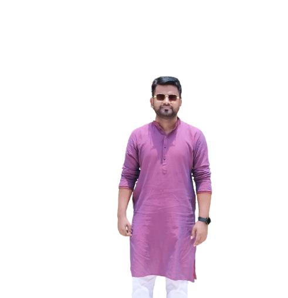

| Home | News | Gallery | About | Contact |
OBJECTIVE
The Daily Star carries on with the long-term responsibility is to strengthen public opinion on how the democratic system should work and how to sustain and nurture democratic norms effectively.It was a privilege for The Daily Star to be part of a changing scene after the fall of military autocrat in early 1990s. With that privilege came an enormous responsibility of upholding the duties of a free press. The newspaper is proud to pursue that policy without relenting for the past 23 years.
SOCIAL AND ECONOMIC COMMITMENT
Being well aware of its social responsibilities and duties, the newspaper works to ensure human rights to all, remove gender discrimination, advocate rule of law, press freedom, transparency and accountability in the administration and in the world of trade and industry and above all to uphold national interests. While working for these ends, The Daily Star always maintains utmost sincerity and accountability to serve the nation the way it is bound by its norms and values.Besides running news reports on these issues, The Daily Star carries special reports, human-interest stories, features, articles and essays written by its staffs and other professionals and talents from across the country and abroad. During different national crises, the newspaper played an important role to solve those to stop people's sufferings. As it remain alert of its social duties, The Daily Star frequently organises roundtables, seminars and discussions on the issues. It also works closely with the civil society for this end.To promote young talents, The Daily Star organises debates and different competitions at school and college-levels and awards those who show excellence in different fields.
VALUES
The uniqueness of The Daily Star lies in its non-partisan position, in the freedom it enjoys from any influence of political parties or vested groups. Its strength is in taking position of neutrality in conflicts between good and evil, justice and injustice, right and wrong, regardless of positions held by any group or alliance.The paper believes to report events objectively, as it is, and without any fear and favour. It is committed to serve the people. That's why people — whether in power or in opposition — respect The Daily Star.The Daily Star advocates rule of law, human rights, gender issues, national interests, press freedom, transparency and accountability of people in the administration and in the world of trade and industry on which the newspaper has never compromised whatever the costs. No political powers can take it for granted and no-one is given cause to doubt its fairness.
GOVERNING BODY
The newspaper is run a Board of Directors comprising six members. Head of the body is called Chairman while other members Directors. The Board of Directors only deals with income and investment of the newspaper but have nothing to do with policymaking.The responsibility of policymaking lies with the Editor who is also one of the Directors.

HISTORYThe Daily Star established its place in the media scene of Bangladesh on January 14, 1991. It started its journey with a sense of challenge and a feeling of humility to serve this nation as a truly independent newspaper.The newspaper made its debut at a historic time when, with the fall of an autocratic regime, the country was well set to begin a new era towards establishing a democratic system of government which eluded Bangladesh for too long. |
FACILITIES, WAGE THE DAILY STARThe Daily Star follows the Wage Board, announced by the government for newspaper staffs. The newspaper is regular in providing its staffs their due overtime and has a reputation of regular payment.It also provides gratuity and provident funds to all staff members. Besides, the daily gives two additional festival bonuses to all members every year. All staff members of the daily enjoy health insurances, provided by the office. While all the staffs get transport allowance, policymaking staffs and heads of different sections are provided cars from the office and get fuel cost. Most of the reporters use motorcycles provided by the office and get fuel cost.The management encourages its staff members by providing increments for good performance and special bonuses.Meantime, the newspaper house provides other facilities that the staffs need during their working hours. It has a canteen for the staff, which remains open since morning till the office ends for the convenience of the staffs. |

| APPS | COMMENT POLICY | SMS SUBSCRIPTION | RSS |
| SITEMAP | ADVERTISEMENT | NEWSLETTER | PRIVACY POLICY |
| CONFERENCE HALL | ARCHIVES | Follow Us | CONTACT |
Any unauthorized use or reproduction of The Daily Star content for commercial purposes isstrictly prohibited and constitutes copyright infringement liable to legal action.
© 2022 thedailystar.net | Made by: Sohel Rana